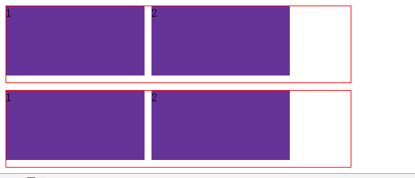

怎么产生的浮动
当一个div中的子元素设置了float时，这个div的高度没有随着内容的增加而改变高度
错误效果
正确效果

解决方案
方法1
在浮动元素末尾添加一个空的标签例如 <div style=”clear:both”></div>其他标签br等亦可
优点：通俗易懂，容易掌握
缺点：可以想象通过此方法，会添加多少无意义的空标签，有违结构与表现的分离。
方法2
通过设置父元素overflow值设置为hidden；在IE6中还需要触发 hasLayout ，例如 zoom：1；
优点：不存在结构和语义化问题，代码量极少
缺点：内容增多时候容易造成不会自动换行导致内容被隐藏掉，无法显示需要溢出的元素；
方法3(推荐方法)
需要注意的是 :after是伪元素，不是伪类（某些CSS手册里面称之为“伪对象”），很多闭合浮动大全之类的文章都称之为伪类，不过csser要严谨一点，这是一种态度。由于IE6-7不支持:after，使用 zoom:1触发 hasLayout。
优点：结构和语义化完全正确,代码量居中
缺点：复用方式不当会造成代码量增加
方法4
这种方法很简单，就是把“#outer”元素也进行浮动（向左或者向右）。
但是这种方法带来的别外一个问题就是和“#outer”相邻的下一个元素会受到“#outer”的影响位置会产生变化，所以使用这种方法一定要小心。有选择把页面中的所有元素都浮动起来，最后使用一个适当的有意义的元素（比如页脚）进行清理浮动，这有助于减少不必要的标记，但是过多的浮动会增加布局的难度。